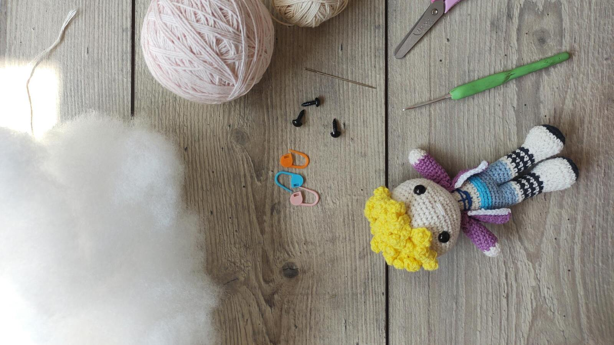

7 erros de amigurumi que iniciantes cometem (e como corrigir hoje)

Se você já terminou uma peça e sentiu que “não ficou como na foto”, você não está sozinha. Quase todo iniciante em amigurumi tropeça nos mesmos pontos: material, tensão, montagem e finalização. A boa notícia é que são erros simples de corrigir quando você sabe exatamente onde olhar.
1) Começar com fio e agulha que dificultam o controle
Fio muito escuro, peludo ou elástico demais pode atrapalhar a leitura dos pontos.
Como corrigir: comece com fio de algodão claro e agulha compatível com o projeto para enxergar melhor cada carreira.
2) Tensão do ponto inconsistente
Quando alguns pontos ficam apertados e outros frouxos, a peça deforma.
Como corrigir: mantenha ritmo constante, faça pausas curtas e compare a tensão a cada carreira.
3) Enchimento em excesso (ou de menos)
Enchimento demais abre buracos; de menos deixa a peça “murcha”.
Como corrigir: coloque em camadas pequenas e modele com os dedos antes de continuar.
4) Contagem de pontos sem conferência
Pular aumento, diminuição ou carreira muda completamente o formato final.
Como corrigir: use marcador de carreira e confira a contagem ao final de cada volta.
5) Costura e montagem sem alinhamento
Braços, pernas e cabeça mal posicionados tiram a harmonia da peça.
Como corrigir: alfinete antes de costurar e veja a peça de frente, perfil e costas antes de fixar.
6) Acabamento apressado
Arremates soltos e detalhes mal aplicados passam sensação de peça inacabada.
Como corrigir: reserve tempo só para acabamento: esconder fios, simetria e limpeza visual.
7) Comparar sua peça inicial com peça avançada
Isso gera frustração e abandono cedo demais.
Como corrigir: compare sua peça atual com sua peça anterior. Evolução real é consistência, não perfeição imediata.
Checklist final antes de considerar a peça pronta
- Pontos com tensão uniforme
- Enchimento distribuído sem deformar
- Simetria geral (frente/perfil/costas)
- Costuras firmes e discretas
- Fios bem arrematados
- Foto final em boa luz para autoavaliação
Matriz de diagnóstico rápido (erro -> causa -> correção)
Quando a peça não fica como você esperava, evite refazer no escuro. Use uma lógica simples de diagnóstico:
A) A peça ficou torta
Causa provável: contagem irregular ou aumento/diminuição fora de posição.
Correção: volte para a última carreira confirmada, marque início de volta e valide ponto a ponto.
B) A peça ficou com buracos visíveis
Causa provável: ponto frouxo para o fio escolhido ou excesso de enchimento empurrando a trama.
Correção: ajuste a tensão, teste uma agulha menor e reduza enchimento por camada.
C) A peça ficou dura e sem vida
Causa provável: enchimento compactado em excesso.
Correção: retire parte do enchimento, redistribua e modele com as mãos antes de fechar.
D) O rosto ficou estranho
Causa provável: olhos e detalhes posicionados sem marcação de simetria.
Correção: marque eixo central e distâncias antes de fixar qualquer detalhe.
E) A peça abre nas costuras
Causa provável: costura curta, fio fino para a junção ou tensão fraca na união.
Correção: reforce junções com pontos firmes e fio adequado ao peso da peça.
Plano prático de evolução em 14 dias
Para acelerar resultado, você não precisa de várias técnicas novas ao mesmo tempo. Precisa de repetição com foco.
Dias 1 a 3: base técnica
- Treine ponto baixo com tensão uniforme.
- Faça mini amostras circulares para praticar aumento e diminuição.
- Registre qual combinação fio/agulha te dá mais controle.
Dias 4 a 6: enchimento e formato
- Produza duas peças pequenas iguais.
- Varie o enchimento entre elas para comparar firmeza e forma.
- Fotografe frente, lateral e costas para autoanálise.
Dias 7 a 9: simetria e montagem
- Treine alinhamento de braços/pernas com alfinete antes da costura.
- Defina uma regra visual: olhar de frente antes de fixar.
- Corrija uma peça antiga para sentir diferença prática.
Dias 10 a 12: acabamento
- Pratique arremate limpo e ocultação de fios.
- Revise detalhes finais (olhos, boca, bordados e acessórios).
- Compare tempo de execução e qualidade final.
Dias 13 e 14: validação
- Execute uma peça completa com seu novo processo.
- Aplique o checklist final.
- Documente o antes/depois da sua evolução.
Como transformar erro em padrão de qualidade
Iniciante que evolui rápido não é quem não erra. É quem registra, corrige padrão e repete processo.
- Terminou a peça -> foto em boa luz.
- Avalie com checklist.
- Identifique 1 erro dominante.
- Defina 1 ajuste para a próxima peça.
- Repita por pelo menos 5 peças.
Esse método reduz ansiedade e dá previsibilidade. Em vez de depender de inspiração, você passa a confiar no processo.
FAQ
Qual o melhor fio para iniciantes em amigurumi?
Fio de algodão claro costuma facilitar a visualização e o controle dos pontos.
Como evitar buracos no amigurumi?
Ajuste a tensão e evite enchimento em excesso. Trabalhe em camadas pequenas.
Preciso desmanchar tudo quando erro a contagem?
Depende do impacto no formato. Se comprometer estrutura/simetria, vale refazer.
Quanto tempo leva para melhorar o acabamento?
Com prática deliberada por algumas peças, a evolução costuma ser perceptível rapidamente.